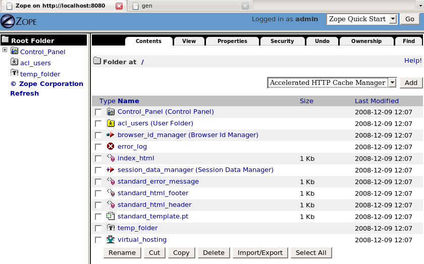
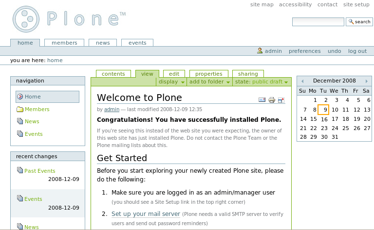
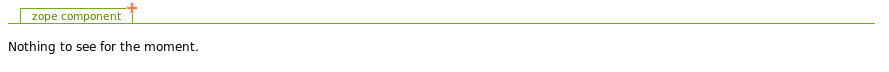
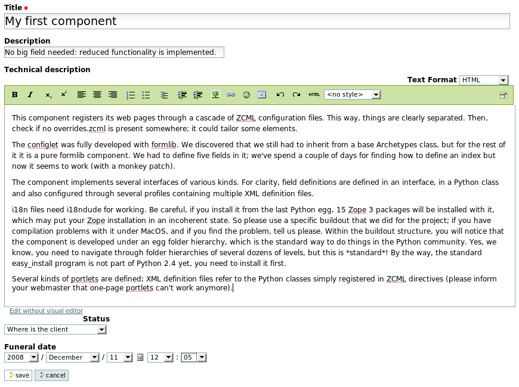
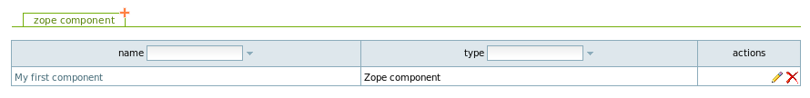
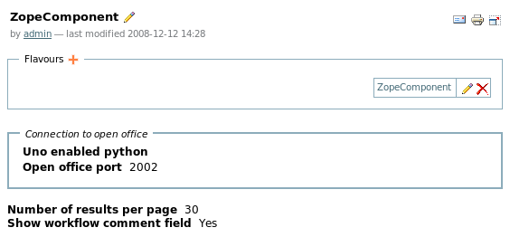
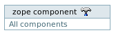

gen is a code generator that allows you write web applications without having to face and understand the plumbery of a given web framework. gen protects you. Concentrate on functionalities that need to be implemented: gen will fight for you, by itself, against the low-level twisted machineries and will let you evolve in your pure, elegant and minimalistic Python world.
gen generates code that will run on Plone 2.5. Soon, the code will also be compatible with the latest Plone version. In my point of view, Plone 2.5 has reached the maximum level of complexity a Python developer may tolerate. Plone 2.5 heavily relies on Zope 2. While Plone 3 still runs on Zope 2, it has become heavily based on Zope 3 through the use of the "Five" product (=Zope 2 + Zope 3), that allows to use Zope 3 functionalities within Zope 2. Some people began to be angry about how complex certain tasks (like creating a portlet) became with Plone 3 (consult this, for instance.) In order to fight against this trend, we decided to create a new code generator (a kind of concurrent to ArchGenXML so) that already makes sense for Plone 2.5 and will be more and more relevant for the current and future Plone versions, as the Plone community took the debatable decision to move to Zope 3.
If you have strict deadlines, skip this.
Read only this if you want to run a "Hello world" gen application on your machine. This section is dedicated to Joel, a tremedous application and framework tester that ignores the essence of his gift.
I've never installed or tested gen on Windows. Feedback is welcome!
You need to get Plone 2.5.5 installed on your system. The simplest way to do it is run the unified installer available here. If a message warns you that the release is not supported anymore, please send a mail to plone.org asking them why the official Plone site still uses a dangerous unsupported Plone version (at this time of writing, December 8th 2008).
Let's suppose you have Plone, Zope and Python now installed in /opt/Plone-2.5.5. The unifier installed created a ZEO cluster in /opt/Plone-2.5.5/zeocluster. A ZEO cluster is a kind of load balancer that runs in front of several Zope servers, also called Zope "instances" (and also called "ZEO clients" in this context). For developement, a ZEO cluster is not needed; it is preferable to start from a fresh Zope server (from now on I will use the term "Zope instance") that you will install somewhere in your home folder.
Create a new Zope instance by typing /opt/Plone-2.5.5/Python-2.4.4/bin/python /opt/Plone-2.5.5/bin/mkzopeinstance.py. This is important to run this Python script with the Python interpreter that will run your Zope instance, ie the one installed in /opt/Plone-2.5.5/Python2.4.4. I will suppose you have created it in [myZopeInstance]. You will use the username and password asked by the script for connecting to the Zope instance as administrator. A Zope instance has the following structure:
| bin | contains the script for starting/stopping the Zope instance. Go to this folder and type ./zopectl fg. It will start Zope in debug mode, in 'foreground' in your shell, by default on port 8080. If you want to start and stop the instance normally, (without being tied to your shell) use ./zopectl start and ./zopectl stop. |
| etc | contains zope.conf, the configuration file of your Zope instance. Every time you modify this file you will need to restart the server. It is well documented; edit this if, for example, you need to change the port on which the instance listens. |
| Extensions | I don't care about this. |
| import | I don't care about this. |
| lib | , and more specifically lib/python, is the folder where additional Python packages used by your Zope instance will lie. As gen-applications are standard Python packages, this is the typical place where you will store them. |
| log | contains the log files of your instance: Z2.log is the web server log (every HTTP request dumps a line into it); event.log contains more relevant, "application-level" information (debug info, warnings, infos, etc). When running the instance in foreground, events dumped in event.log will also show up in your shell. |
| Products | is the folder where Zope "add-ons" will reside. Although a Zope "product" is also a Python package, it contains additional ugly code that transforms it into a real Zope add-on. For every gen-application that you will create or sim-link in lib/python, gen will create and maintain for you the corresponding Zope Product in Products. There is a 1-1 relationship between a gen-application and the generated Zope product. |
| var | is where Zope stores its database (DB) and related files. Unlike other DB technologies, there is no separate process that controls the DB and that needs to be called by the web/application server for reading or writing into the DB. Here, the Zope instance itself is directly connected to the DB, which is a single file named Data.fs. The DB technology used by Zope is named ZODB (which stands for Zope Object DataBase). |
But what about Plone, huh? Plone is simply a bunch of Zope Products that add plenty of nice predefined functionalities and pages to Zope which is a bit arid as-is. So let's take a look at the Products folder of your Zope instance. It is empty! For transforming it into a Plone-ready Zope instance, simply copy the Plone products from /opt/Plone-2.5.5/zeocluster/Products. Go to [myZopeInstance]/Products and type cp -R /opt/Plone-2.5.5/zeocluster/Products/* .
Your Zope instance is now ready-to-use. Start it and go to http://localhost:8080/manage with a web browser. Type the username and password you have entered while creating the instance and you will arrive in the ZMI (the Zope Management Interface). You may see the ZMI as a database viewer that shows you the content of Data.fs. You may also see it as an admin interface allowing you to trigger administrative functions. Because the ZODB is an object-oriented database, both visions are merged: functions and data are bundled into objects that are organized into a hierarchy (and more). The figure below shows the ZMI.

You will notice that an empty Zope database still contains some predefined objects and folders: a "control panel", a folder (acl_users) where users are stored (it contains currently only one user), a web page "index_html" that is shown if you go to http://localhost:8080, etc. Everything is an object there, even the main error_log which is a nice way to browse through-the-web the log entries also dumped on the file system in [myZopeInstance]/log/event.log.
A Plone site is simply one more object to create within the Zope hierarchy of objects. In the ZMI, select, in the listbox at the right-top corner, "Plone site" and click on the "Add" button. Choose "Appy" as Id and "Hello world" as Title and click on "Add Plone Site". You have now created a Plone site! If you want to access a given object through-the-web, you simply have to type the "path" of the object within the Zope hierarchy. So now, go to http://localhost:8080/Appy and you will see the main page of your Plone site, like shown below.

The underlying technologies required by gen are now up-and-running. Let's install gen. gen is a simple Python package available as a zip file (and more) here. For example, you may unzip it in [myZopeInstance]/lib/python or in /opt/Plone-2.5.5/Python-2.4.4/lib/python2.4/site-packages. If you put it in the latter place, it will be enabled for all future Zope instances you may use or create (including the ZEO cluster in /opt/Plone-2.5.5/zeocluster).
We are ready to create our first gen-application. Imagine we are a software company that creates components using Zope 3. The company is a start-up, but after a few months, it has already developed hundreds of Zope 3 components (indeed, every single web page is considered a component). The company decides to create a simple tool for managing those small pieces of code. Let's create a simple gen-application for this, in a file named ZopeComponent.py:
01 from appy.gen import *
02
03 class ZopeComponent:
04 root = True
05 description = String()
06 technicalDescription = String(format=String.XHTML)
07 status = String(validator=['underDevelopement', 'stillSomeWorkToPerform',
08 'weAreAlmostFinished', 'alphaReleaseIsBugged', 'whereIsTheClient'])
09 funeralDate = Date()
9 lines of code (with a blank one; please note that I'm obsessed by lines that do not span more than 80 characters): yes, you are done. Every Zope component will be described by this bunch of attributes. Specifying the class as root makes it a class of special importance to gen; it will be treated with some honors. We will see how in a moment.
Please put ZopeComponent.py in [myZopeInstance]/lib/python, cd into this folder and type the following line.
python [whereYouInstalledAppy]/appy/gen/generator.py ZopeComponent.py plone25 ../../Products
You will get an output similar to this:
Generating product in /home/gde/ZopeInstance2/Products...
Generating class ZopeComponent.ZopeComponent...
Done.
If you are familiar with Zope/Plone products, you may take a look to the one gen has generated in [myZopeInstance]/Products/ZopeComponent.
Restart your Zope instance, go to http://localhost:8080/Appy, log in with your Zope admin password and click on the link "site setup" in the top-right corner: you arrive in the Plone configuration panel. Click on "Add/Remove products". Among the "products available for install" you will find ZopeComponent:select it and install it. Right. Click now on the Plone logo to come back to the main page, and see what's new. On the left, you see a new "portlet" entitled "zope component": this is the main entry point for your application. gen generates a portlet for every gen-application. The link "Zope component" allows you to access a kind of "dashboard" displaying all Zope components. The page is empty for the moment: no component was created yet:

Click on the "plus" sign for creating your first Zope component. A form allows you to enter information according to your Python class definition in ZopeComponent.py.

Note that the order of the widgets correspond to the order of the fields in the Python class definition. Clicking on "Save" creates your first Zope 3 component, and brings you to the "view" page for your component. Clicking again on the portlet link will show you this:

On this screen, every Python class you declare as "root" in your gen-application will get a tab allowing you to view instances of this class or add new ones. If you've defined more than one root class, a global tab will precede all others and display all instances of all root classes. Table columns are all sortable; they also contain special fields used for filtering rows according to type entered. Actions the user may trigger on Zope components are available in the last column. Clicking on the component title will bring you back to the "view" page for it.
Besides the view/edit pages and this dashboard, gen also generates a configuration panel for your application. It is directly accessible through the portlet by clicking on the hammer.

This configuration panel is called a "tool". By default, the ZopeComponent tool defines one "flavour" named "ZopeComponent". A flavour is a particular set of configuration options that may apply only to a subset of your application objects. The concept of flavour allows you to get, in a single web application, several variants of it running concurrently, all with distinct configuration options. If, for example, you create a software for managing the agenda and decisions of a company's meetings, you may need to create one flavour for each meeting type (IT department meetings, HR department meetings, board of directors, etc): every meeting type will get its own configuration options. In the application portlet, one link is created for every flavour defined in the tool. If you have only one flavour, it makes sense to rename it with something like "All components". You may do it by clicking on the pen besides the flavour name. This way, the application portlet will look like this:

A the tool level, some general configuration options are defined (they apply to all defined flavours), like the way Plone will contact OpenOffice in server mode for producing documents (document-generation through appy.pod is built-in for every gen-app) or the number of elements to display per page on the dashboard. If you click on the flavour title, you will discover some configuration options that you may customize at the flavour level (the whole set of options in the flavour depends on options specified in your Python classes). For example, clicking on the pen within the "user interface" tab allows you to customize the columns shown in the dashboard for objects corresponding to this flavour. Select one or more columns here (keep the "control" key pressed if you want to select several columns), save the result and see how the dashboard evolves accordingly.